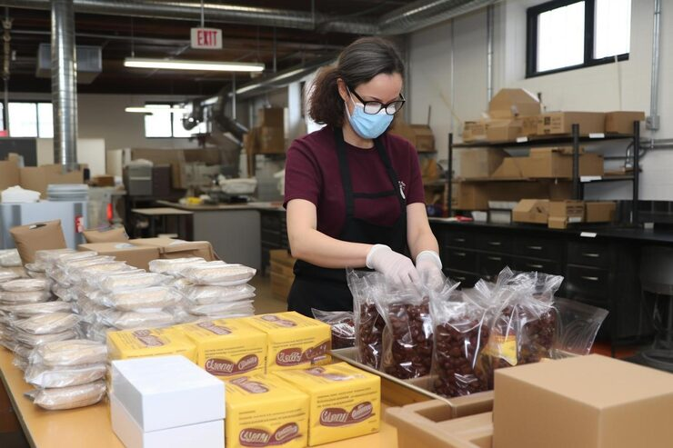
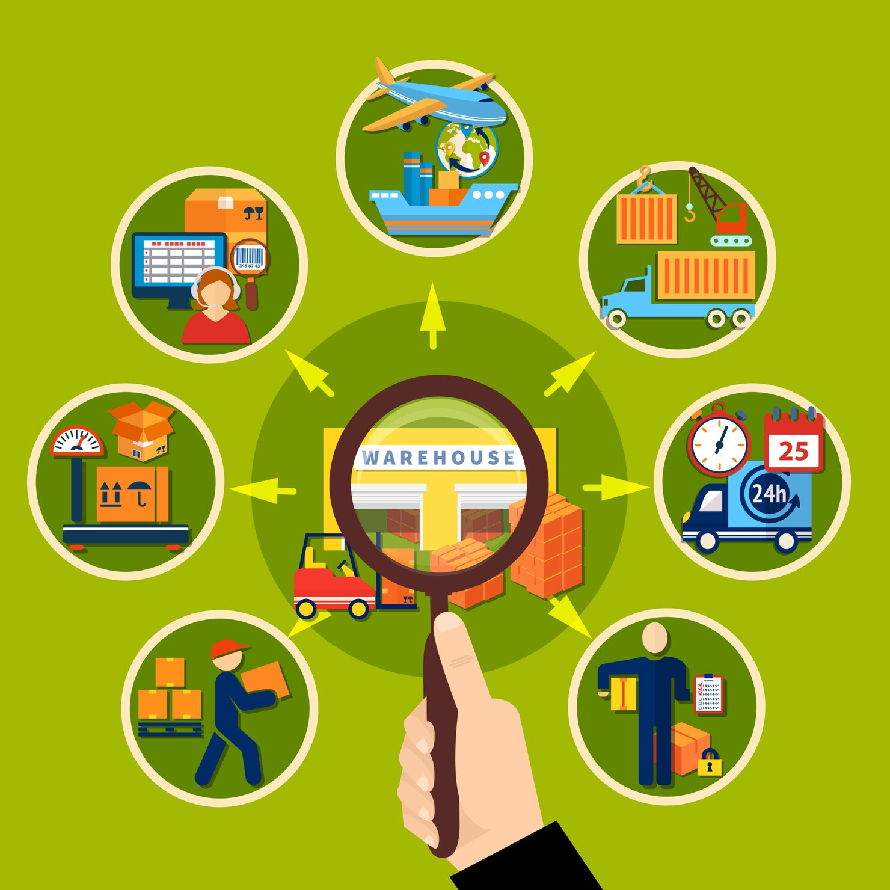
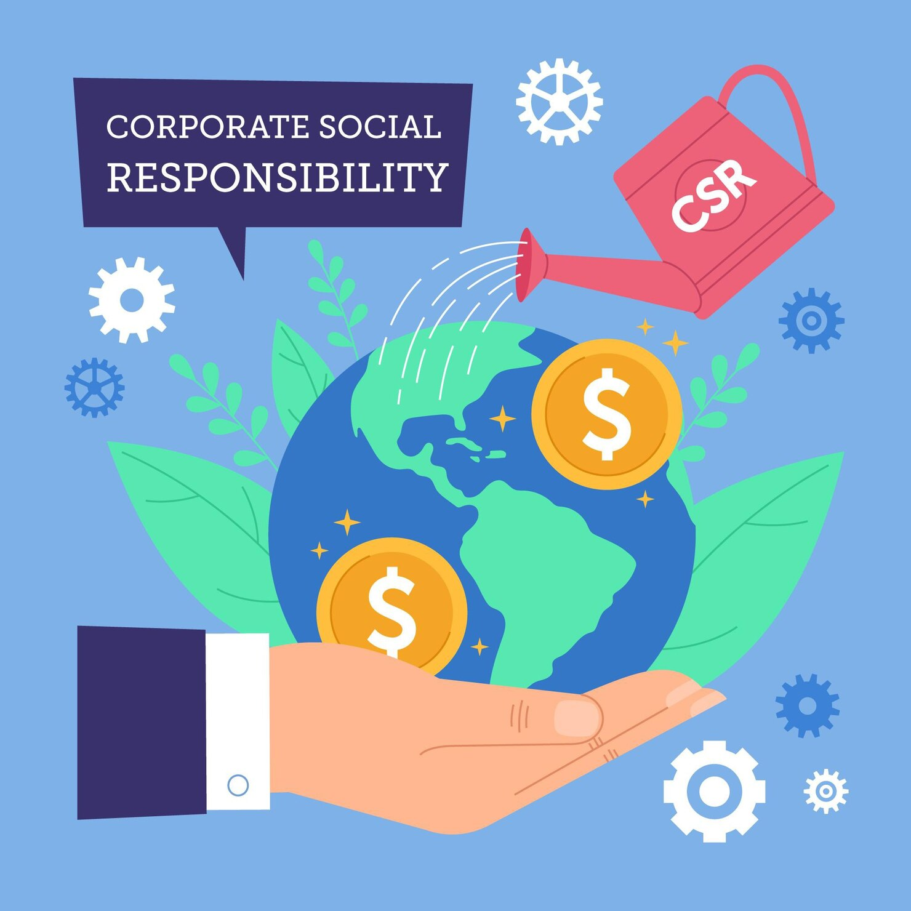

How We Follow Sustainability Rules
RAA WINRAA's commitment to measurable environmental, social, and economic responsibility in international trade.
Our Core Commitment
25% carbon reduction by 2030 | 100% supplier audits by 2027 | ISO 14001 certified | Fair wages & zero child labor
What We're Doing Right Now
We don't just talk about sustainability—we implement specific, measurable practices backed by certifications and third-party audits.
1. Carbon Reduction & Clean Operations


- Fleet Optimization: Shifting cargo toward sea freight over air where possible (15% lower carbon per ton-km)
- Green Energy Infrastructure: Installing solar and renewable energy systems in warehouse facilities
- Carbon Measurement: Tracking Scope 1, 2, and 3 emissions per GHG Protocol standards
- Target: 25% reduction in CO2 per shipment ton-km by 2030 (baseline: 2024)
- Certification Goal: ISO 14001 certification by Q4 2026; Science-Based Targets (SBTi) validation by 2027
2. Eco-Friendly Packaging & Waste Reduction



- Packaging Materials: 100% recyclable cardboard and kraft paper; phasing out single-use plastics
- Waste Reduction Target: 30% reduction in packaging waste by 2027
- Supplier Requirements: All suppliers must use certified sustainable packaging materials
- Verification: Quarterly audits of packaging standards across supply chain
3. Fair-Trade Practices & Supplier Audits



- 100% Supplier Audits: Every supplier undergoes environmental and labor practice audits within 18 months
- Fair Wage Standard: Suppliers must pay workers 20%+ premium above national minimum wage
- Zero Child Labor Policy: Mandatory verification that no workers under 18 work in hazardous roles
- Certifications Required: Suppliers must hold Fair Trade, GOTS, or SMETA certifications
- Worker Safety: Annual health & safety audits; workplace injury rate target <2%
- Grievance Mechanism: Anonymous worker complaint system with 30-day resolution target
4. Certifications & Third-Party Validation
Certifications We're Pursuing:
ISO 14001:2015 — Environmental Management System
Target: Q4 2026 | Ensures comprehensive environmental monitoring, supplier requirements, and continuous improvement
Science-Based Targets Initiative (SBTi) Validation
Target: 2027 | Verifies that carbon reduction targets align with climate science (1.5°C pathway)
Fair Trade & SMETA Compliance
Supplier certification standards ensuring labor practices, safety, and ethical sourcing across supply chain
5. Key Performance Indicators
6. Transparency & Annual Reporting
We publish an annual sustainability report covering:
- Carbon footprint by scope (owned operations, purchased energy, supply chain)
- Supplier audit results and certifications achieved
- Worker safety and wage compliance metrics
- Community development fund allocations and impact
- Progress toward ISO 14001 and SBTi targets
- Third-party verification of environmental claims
Verification: Our sustainability metrics are independently verified by third-party auditors, not self-assessed.
Sustainability as a Partnership
Your business can reduce environmental impact. We offer:
- Carbon-Neutral Shipping: Offset your shipment's carbon footprint through verified carbon credits
- Slower Shipping Options: Sea freight over air freight where possible (60%+ carbon reduction)
- Supplier Transparency: Full documentation of your suppliers' sustainability certifications
- Compliance Support: Help navigating EU, US, and Canadian sustainability regulations (CSRD, ESRS, SASB)
- Carbon Reporting: Detailed carbon footprint calculation for each shipment for your ESG reporting
We Avoid Greenwashing
What we don't do: Make vague claims like "we care about the planet" or "we're eco-friendly." That's greenwashing.
What we do: Set specific targets (25% by 2030), pursue certifications (ISO 14001, SBTi), conduct audits (100% suppliers in 18 months), and publish annual reports with verifiable metrics.
Real sustainability requires measurable practices, third-party verification, and accountability—not marketing slogans.